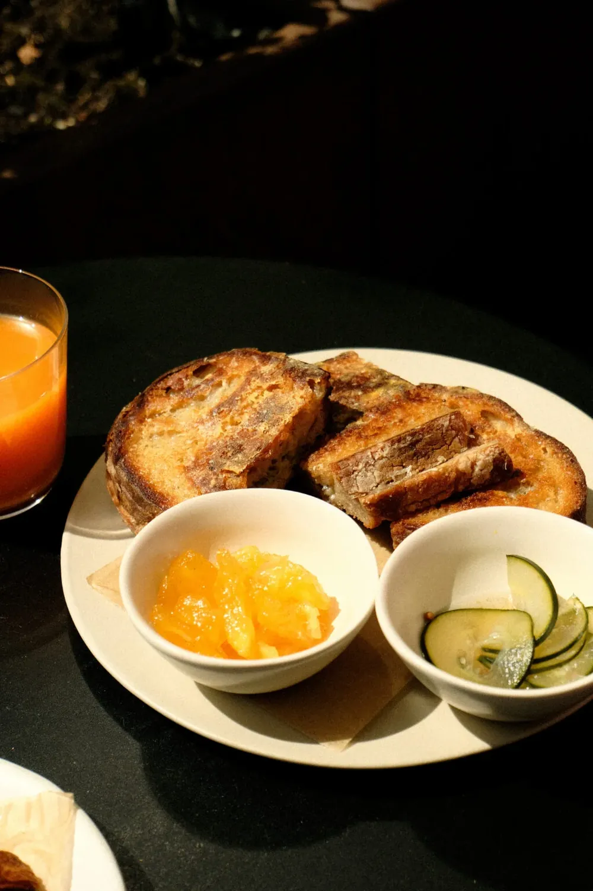
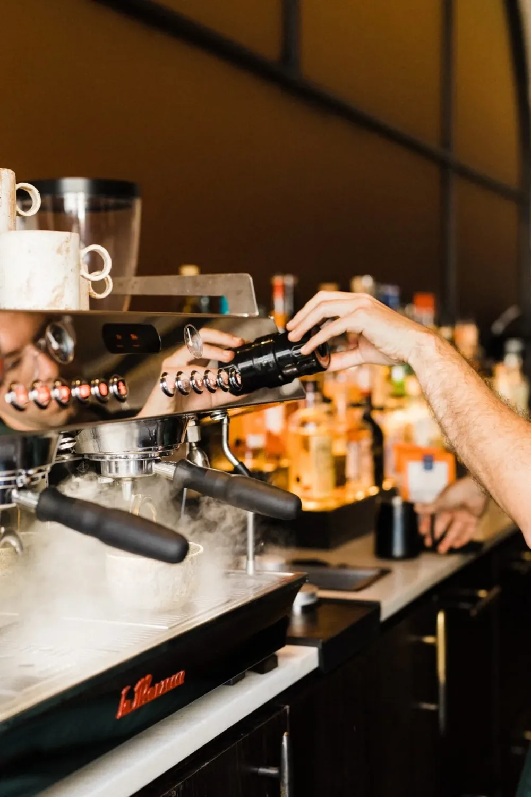
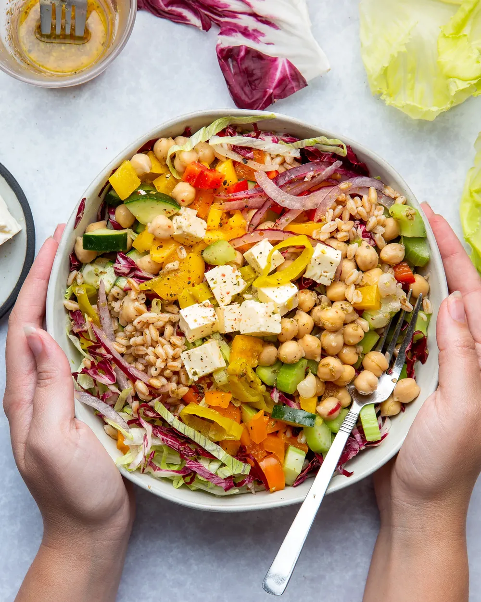

acessível
Preços que fazem sentido.Comer bem não deve ser um luxo. Aqui, qualidade e preço justo andam sempre juntos.
Um lugar onde o aroma do café encontra o sabor de Angola. Nascemos de uma ideia simples: criar um espaço que toda a gente chama de seu.
Talatona, Luanda, desde 2022

O Okulya Café abriu as portas com uma missão clara: criar um espaço onde todos se sentissem bem-vindos, onde o pequeno-almoço fosse tão especial como o almoço e onde a qualidade não fosse um privilégio.
Instalados em Talatona, tornámo-nos depressa o destino de quem quer começar o dia com energia ou fazer uma pausa no trabalho com um almoço que vale mesmo a pena.

A nossa equipa
conhece-te pelo nome.
Viemos para ficar. O Okulya não é apenas mais um café: é o lugar onde os escritórios da vizinhança fazem reuniões, onde as famílias celebram pequenos momentos e onde os amigos se reencontram ao fim de semana.
A nossa cozinha prepara cada prato como se fosse o primeiro. E o espaço foi pensado para te sentires em casa, com o conforto de um restaurante de qualidade.
Porque acreditamos que uma boa refeição é uma das coisas mais simples, e mais importantes, da vida.

O almoço no Okulya é a razão para sair do escritório, respirar e recarregar energias. Dos pratos tradicionais angolanos às sugestões do chefe, a ementa é pensada para quem quer comer bem sem gastar o que não tem.
Comer bem não deve ser um luxo. Aqui, qualidade e preço justo andam sempre juntos.
A cozinha trabalha com produtos frescos e locais, e isso sente-se à primeira garfada.
Sabemos que a hora de almoço é curta. Somos ágeis, sem abdicar da qualidade.